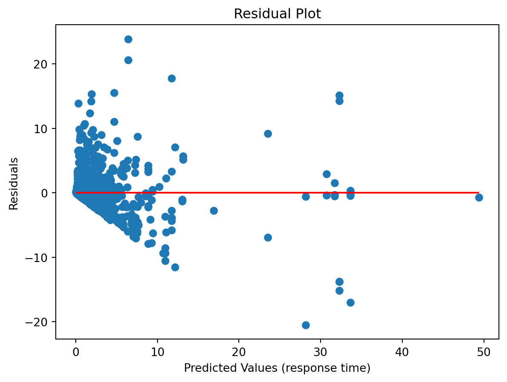
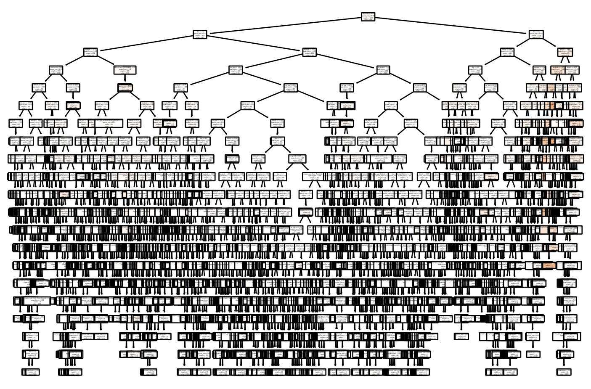
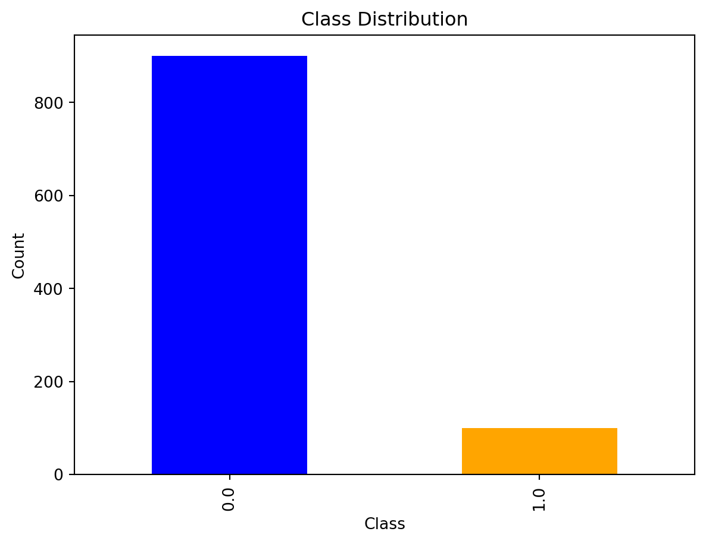
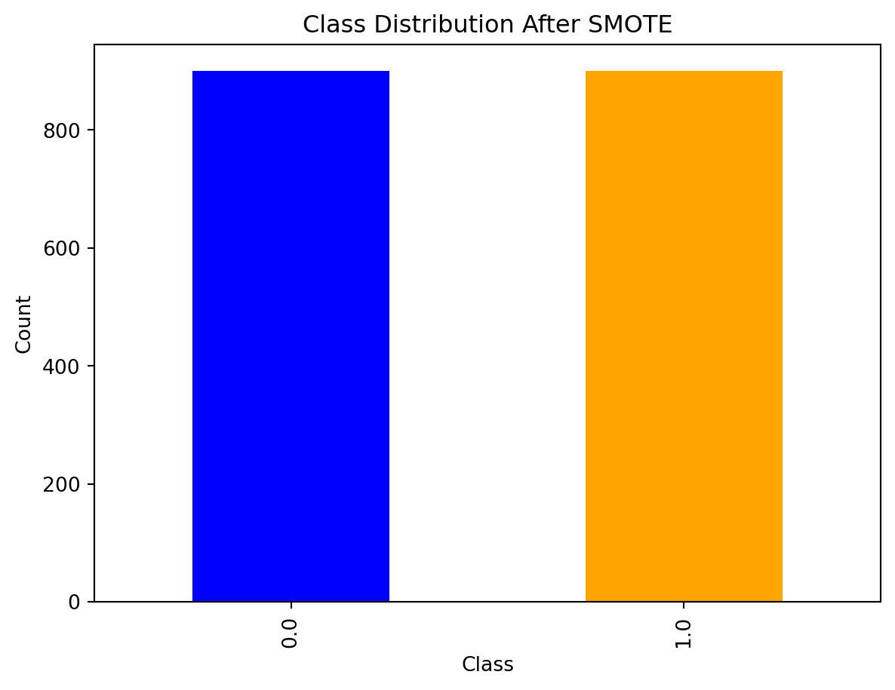
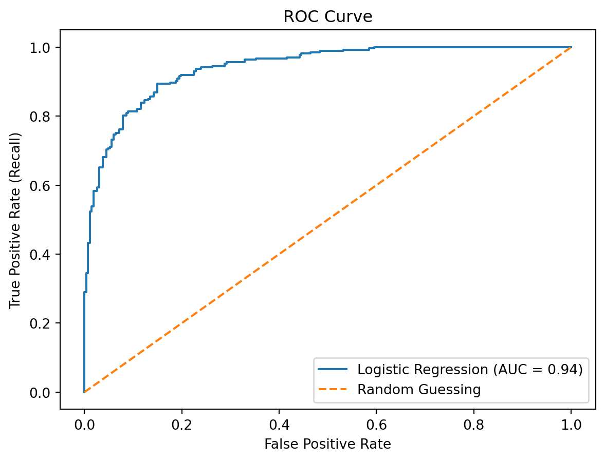

import pandas as pd
from sklearn.model_selection import train_test_split
from sklearn.preprocessing import StandardScaler
df = pd.read_feather('data/nyccrashes_cleaned.feather')
vehicle_columns = ['vehicle_type_code_1', 'vehicle_type_code_2',
'vehicle_type_code_3', 'vehicle_type_code_4', 'vehicle_type_code_5']
df['number_of_vehicles_involved'] = df[vehicle_columns].notna().sum(axis=1)
scaler = StandardScaler()
df[['latitude', 'longitude']] = scaler.fit_transform(
df[['latitude', 'longitude']])
df['contributing_factor_vehicle_1'] = df['contributing_factor_vehicle_1'].str.lower().str.replace(' ', '_')
df = pd.get_dummies(df,
columns=['borough', 'contributing_factor_vehicle_1'],
drop_first=True)10 Supervised Learning
10.1 Decision Trees: Foundation
Decision trees are widely used supervised learning models that predict the value of a target variable by iteratively splitting the dataset based on decision rules derived from input features. The model functions as a piecewise constant approximation of the target function, producing clear, interpretable rules that are easily visualized and analyzed (Breiman et al., 1984). Decision trees are fundamental in both classification and regression tasks, serving as the building blocks for more advanced ensemble models such as Random Forests and Gradient Boosting Machines.
10.1.1 Algorithm Formulation
The core mechanism of a decision tree algorithm is the identification of optimal splits that partition the data into subsets that are increasingly homogeneous with respect to the target variable. At any node \(m\), the data subset is denoted as \(Q_m\) with a sample size of \(n_m\). The objective is to find a candidate split \(\theta\), defined as a threshold for a given feature, that minimizes an impurity or loss measure \(H\).
When a split is made at node \(m\), the data is divided into two subsets: \(Q_{m,l}\) (left node) with sample size \(n_{m,l}\), and \(Q_{m,r}\) (right node) with sample size \(n_{m,r}\). The split quality, measured by \(G(Q_m, \theta)\), is given by:
\[ G(Q_m, \theta) = \frac{n_{m,l}}{n_m} H(Q_{m,l}(\theta)) + \frac{n_{m,r}}{n_m} H(Q_{m,r}(\theta)). \]
The algorithm aims to identify the split that minimizes the impurity:
\[ \theta^* = \arg\min_{\theta} G(Q_m, \theta). \]
This process is applied recursively at each child node until a stopping condition is met.
- Stopping Criteria: The algorithm stops when the maximum tree depth is reached or when the node sample size falls below a preset threshold.
- Pruning: Reduce the complexity of the final tree by removing branches that add little predictive value. This reduces overfitting and improves the generalization accuracy of the model.
10.1.2 Search Space for Possible Splits
At each node in the decision tree, the search space for possible splits comprises all features in the dataset and potential thresholds derived from the values of each feature. For a given feature, the algorithm considers each unique value in the current node’s subset as a possible split point. The potential thresholds are typically set as midpoints between consecutive unique values, ensuring the data is partitioned effectively.
Formally, let the feature set be \(\{X_1, X_2, \ldots, X_p\}\), where \(p\) is the total number of features, and let the unique values of feature $ X_j $ at node $ m $ be denoted by ${v_{j,1}, v_{j,2}, , v_{j,k_j}} \(. The search space at node\)m$ includes:
- Feature candidates: \(\{X_1, X_2, \ldots, X_p\}\).
- Threshold candidates for \(X_j\): \[ \left\{ \frac{v_{j,i} + v_{j,i+1}}{2} \mid 1 \leq i < k_j \right\}. \]
The search space therefore encompasses all combinations of features and their respective thresholds. While the complexity of this search can be substantial, particularly for high-dimensional data or features with numerous unique values, efficient algorithms use sorting and single-pass scanning techniques to mitigate the computational cost.
10.1.3 Metrics
10.1.3.1 Classification
In decision tree classification, several criteria can be used to measure the quality of a split at each node. These criteria are based on how “pure” the resulting nodes are after the split. A pure node contains samples that predominantly belong to a single class. The goal is to minimize impurity, leading to nodes that are as homogeneous as possible.
Gini Index: The Gini index measures the impurity of a node by calculating the probability of randomly choosing two different classes. A perfect split (all instances belong to one class) has a Gini index of 0. At node \(m\), the Gini index is \[ H(Q_m) = \sum_{k=1}^{K} p_{mk} (1 - p_{mk}), \] where \(p_{mk}\) is the proportion of samples of class \(k\) at node \(m\); and\(K\) is the total number of classes The Gini index is often preferred for its speed and simplicity, and it’s used by default in many implementations of decision trees, including
sklearn.Entropy (Information Gain): Entropy is another measure of impurity, derived from information theory. It quantifies the “disorder” of the data at a node. Lower entropy means higher purity. At node \(m\), it is defined as \[ H(Q_m) = - \sum_{k=1}^{K} p_{mk} \log p_{mk} \] Entropy is commonly used in decision tree algorithms like ID3 and C4.5. The choice between Gini and entropy often depends on specific use cases, but both perform similarly in practice.
Misclassification Error: Misclassification error focuses solely on the most frequent class in the node. It measures the proportion of samples that do not belong to the majority class. Although less sensitive than Gini and entropy, it can be useful for classification when simplicity is preferred. At node \(m\), it is defined as \[ H(Q_m) = 1 - \max_k p_{mk}, \] where \(\max_k p_{mk}\) is the largest proportion of samples belonging to any class \(k\).
10.1.3.2 Regression Criteria
In decision tree regression, different criteria are used to assess the quality of a split. The goal is to minimize the spread or variance of the target variable within each node.
Mean Squared Error (MSE): Mean squared error is the most common criterion used in regression trees. It measures the average squared difference between the actual values and the predicted values (mean of the target in the node). The smaller the MSE, the better the fit. At node \(m\), it is \[ H(Q_m) = \frac{1}{n_m} \sum_{i=1}^{n_m} (y_i - \bar{y}_m)^2, \] where
- \(y_i\) is the actual value for sample \(i\);
- \(\bar{y}_m\) is the mean value of the target at node \(m\);
- \(n_m\) is the number of samples at node \(m\).
MSE works well when the target is continuous and normally distributed.
Half Poisson Deviance (for count targets): When dealing with count data, the Poisson deviance is used to model the variance in the number of occurrences of an event. It is well-suited for target variables representing counts (e.g., number of occurrences of an event). At node \(m\), it is \[ H(Q_m) = \sum_{i=1}^{n_m} \left( y_i \log\left(\frac{y_i}{\hat{y}_i}\right) - (y_i - \hat{y}_i) \right), \] where \(\hat{y}_i\) is the predicted count. This criterion is especially useful when the target variable represents discrete counts, such as predicting the number of occurrences of an event.
Mean Absolute Error (MAE): Mean absolute error is another criterion that minimizes the absolute differences between actual and predicted values. While it is more robust to outliers than MSE, it is slower computationally due to the lack of a closed-form solution for minimization. At node \(m\), it is \[ H(Q_m) = \frac{1}{n_m} \sum_{i=1}^{n_m} |y_i - \bar{y}_m| \] MAE is useful when you want to minimize large deviations and can be more robust in cases where outliers are present in the data.
10.1.3.3 Summary
In decision trees, the choice of splitting criterion depends on the type of task (classification or regression) and the nature of the data. For classification tasks, the Gini index and entropy are the most commonly used, with Gini offering simplicity and speed, and entropy providing a more theoretically grounded approach. Misclassification error can be used for simpler cases. For regression tasks, MSE is the most popular choice, but Poisson deviance and MAE are useful for specific use cases such as count data and robust models, respectively.
10.2 Decision Trees: Demonstration
10.3 Decision Trees: Demonstration
This section was presented by Jaden Astle.
10.3.1 About the Trees
- Supervised learning algorithm
- Both classification & regression methods
- Goal is to sort data into specific groups, one characteristic at a time
- Splitting follows a tree-like structure with binary splits
10.3.2 Classification Trees Overview
- Splits observations based on binary classifications (categorical variables)
- ex. Contains “Congratulations!”, has fur, has a pool, etc.
- Note: categorical variables that are not binary need to be processed with One-Hot Encoding before training
How exactly are these splits chosen?
10.3.3 Splitting the Variables at Each Node
10.3.3.1 Entropy
- Measure of randomness or disorder in the given environment.
- Observes uncertainty of data based on distribution of classes at any given step.
- A lower entropy value means less disorder, therefore a better split.
10.3.3.2 Gini Index
- Utilizes the probability that a random element is incorrectly labeled based on labeling from the original dataset distribution.
- A lower Gini index means a better split.
10.3.4 Classification Tree Implementation
10.3.5 Data Preparation
10.3.6 Data Preparation
features = ['latitude', 'longitude', 'number_of_vehicles_involved']
features += [col for col in df.columns if 'borough_' in col]
features += [col for col in df.columns if 'contributing_factor_vehicle_1_' in col]
df['severe'] = (
(df['number_of_persons_killed'] >= 1) | (df['number_of_persons_injured'] >= 1)).astype(int)
df = df.dropna(subset=features)
X = df[features]
y = df['severe']
X_train, X_test, y_train, y_test = train_test_split(X, y, test_size=0.3, random_state=1234)10.3.7 Entropy-based Model
from sklearn.tree import DecisionTreeClassifier as DTC
from sklearn.metrics import classification_report, confusion_matrix
tree = DTC(criterion='entropy', max_depth=15)
tree.fit(X_train, y_train)
y_pred = tree.predict(X_test)
print(confusion_matrix(y_test, y_pred))
print(classification_report(y_test, y_pred))[[143 147]
[114 113]]
precision recall f1-score support
0 0.56 0.49 0.52 290
1 0.43 0.50 0.46 227
accuracy 0.50 517
macro avg 0.50 0.50 0.49 517
weighted avg 0.50 0.50 0.50 517
10.3.8 Gini-based Model
from sklearn.tree import DecisionTreeClassifier as DTC
from sklearn.metrics import classification_report, confusion_matrix
tree = DTC(criterion='gini', max_depth=15)
tree.fit(X_train, y_train)
y_pred = tree.predict(X_test)
print(confusion_matrix(y_test, y_pred))
print(classification_report(y_test, y_pred))[[170 120]
[136 91]]
precision recall f1-score support
0 0.56 0.59 0.57 290
1 0.43 0.40 0.42 227
accuracy 0.50 517
macro avg 0.49 0.49 0.49 517
weighted avg 0.50 0.50 0.50 517
10.3.9 Regression Trees Overview
- Built for continuous variables; predicts continuous values
- Rather than have the split based on Gini or Entropy, the split is based on MSE
- Calculate all possible splits of all features; minimize total MSE
\[ \text{MSE} = \frac{1}{n} \sum (y_i - \bar{y})^2 \]
\[ \text{Total MSE} = \frac{n_{\text{total}}}{n_{\text{left}}} \cdot \text{MSE}_{\text{left}} + \frac{n_{\text{total}}}{n_{\text{right}}} \cdot \text{MSE}_{\text{right}} \]
10.3.10 Regression Trees Overview
- What about leaf nodes? What are the final classifications?
- Average y of all remaining observations in that node becomes prediction for future observations
10.3.11 Regression Tree Implementation
10.3.12 Data Preparation
import pandas as pd
import numpy as np
from sklearn.model_selection import train_test_split
from sklearn.preprocessing import StandardScaler
df = pd.read_csv('data/nypd311w063024noise_by100724.csv')
df.columns = df.columns.str.lower().str.replace(' ', '_')
df['created_date'] = pd.to_datetime(df['created_date'])
df['closed_date'] = pd.to_datetime(df['closed_date'])
df['hour'] = df['created_date'].dt.hour
df['tod'] = np.where((df['hour'] >= 20) | (df['hour'] < 6), 'Nighttime', 'Daytime')
df['dow'] = df['created_date'].dt.weekday
df['day_type'] = np.where(df['dow'] < 5, 'Weekday', 'Weekend')
df['response_time'] = (df['closed_date'] - df['created_date']).dt.total_seconds() / 3600 #this will be the y-variable
df.columns/var/folders/cq/5ysgnwfn7c3g0h46xyzvpj800000gn/T/ipykernel_46954/2261056809.py:9: UserWarning:
Could not infer format, so each element will be parsed individually, falling back to `dateutil`. To ensure parsing is consistent and as-expected, please specify a format.
/var/folders/cq/5ysgnwfn7c3g0h46xyzvpj800000gn/T/ipykernel_46954/2261056809.py:10: UserWarning:
Could not infer format, so each element will be parsed individually, falling back to `dateutil`. To ensure parsing is consistent and as-expected, please specify a format.
Index(['unique_key', 'created_date', 'closed_date', 'agency', 'agency_name',
'complaint_type', 'descriptor', 'location_type', 'incident_zip',
'incident_address', 'street_name', 'cross_street_1', 'cross_street_2',
'intersection_street_1', 'intersection_street_2', 'address_type',
'city', 'landmark', 'facility_type', 'status', 'due_date',
'resolution_description', 'resolution_action_updated_date',
'community_board', 'bbl', 'borough', 'x_coordinate_(state_plane)',
'y_coordinate_(state_plane)', 'open_data_channel_type',
'park_facility_name', 'park_borough', 'vehicle_type',
'taxi_company_borough', 'taxi_pick_up_location', 'bridge_highway_name',
'bridge_highway_direction', 'road_ramp', 'bridge_highway_segment',
'latitude', 'longitude', 'location', 'hour', 'tod', 'dow', 'day_type',
'response_time'],
dtype='object')10.3.13 Data Preparation
from sklearn.preprocessing import StandardScaler
df = pd.get_dummies(df, columns=['complaint_type', 'borough', 'location_type', 'address_type', 'tod', 'day_type'], drop_first=True)
df['sin_hour'] = np.sin(2 * np.pi * df['hour'] / 24)
df['cos_hour'] = np.cos(2 * np.pi * df['hour'] / 24)
scaler = StandardScaler()
df[['latitude', 'longitude']] = scaler.fit_transform(df[['latitude', 'longitude']])
features = ['sin_hour', 'cos_hour', 'latitude', 'longitude', 'dow', 'tod_Nighttime', 'day_type_Weekend']
features += [col for col in df.columns if 'complaint_type_' in col]
features += [col for col in df.columns if 'borough_' in col]
features += [col for col in df.columns if 'location_type_' in col]
features += [col for col in df.columns if 'address_type_' in col]
df = df.dropna(subset=['latitude', 'longitude'])
training_df = df[features]
training_df.head()| sin_hour | cos_hour | latitude | longitude | dow | tod_Nighttime | day_type_Weekend | complaint_type_Noise - House of Worship | complaint_type_Noise - Park | complaint_type_Noise - Residential | ... | borough_STATEN ISLAND | borough_Unspecified | location_type_House of Worship | location_type_Park/Playground | location_type_Residential Building/House | location_type_Store/Commercial | location_type_Street/Sidewalk | address_type_BLOCKFACE | address_type_INTERSECTION | address_type_UNRECOGNIZED | |
|---|---|---|---|---|---|---|---|---|---|---|---|---|---|---|---|---|---|---|---|---|---|
| 0 | -0.258819 | 0.965926 | -0.225836 | 3.014662 | 5 | True | True | False | False | True | ... | False | False | False | False | True | False | False | False | False | False |
| 1 | -0.258819 | 0.965926 | -1.468384 | -0.396220 | 5 | True | True | False | False | True | ... | False | False | False | False | True | False | False | False | False | False |
| 2 | -0.258819 | 0.965926 | 0.073297 | -0.119805 | 5 | True | True | False | False | True | ... | False | False | False | False | True | False | False | False | False | False |
| 3 | -0.258819 | 0.965926 | 1.259327 | 0.116306 | 5 | True | True | False | False | True | ... | False | False | False | False | True | False | False | False | False | False |
| 4 | -0.258819 | 0.965926 | -0.873509 | 0.723039 | 5 | True | True | False | False | True | ... | False | False | False | False | True | False | False | False | False | False |
5 rows × 25 columns
10.3.14 Data Preparation
X = df[features]
y = df['response_time']
X_train, X_test, y_train, y_test = train_test_split(X, y, test_size=0.2, random_state=1234)10.3.15 Model Training
from sklearn.tree import DecisionTreeRegressor as DTR
from sklearn.metrics import mean_squared_error, r2_score
tree = DTR(max_depth=20, min_samples_split=15)
tree.fit(X_train, y_train)
y_pred = tree.predict(X_test)
print(mean_squared_error(y_test, y_pred))
print(r2_score(y_test, y_pred))3.84329959566305
0.625113447420717210.3.16 Residual plot
import matplotlib.pyplot as plt
residuals = y_test - y_pred
plt.scatter(y_pred, residuals)
plt.hlines(0, min(y_pred), max(y_pred), colors='r')
plt.xlabel("Predicted Values (response time)")
plt.ylabel("Residuals")
plt.title("Residual Plot")
plt.show()
10.3.17 Tree Visualization
from sklearn.tree import plot_tree
import matplotlib.pyplot as plt
plt.figure(figsize=(9, 6))
plot_tree(tree, feature_names=X_train.columns, filled=True, rounded=True)
plt.show()
10.3.18 Export Tree to Text
from sklearn.tree import export_text
tree_structure = export_text(tree, feature_names=list(X_train.columns))
print(tree_structure)This will print a text version of the decision tree in a tree-like format, with each indent representing a new split.
10.3.19 Conclusion
- Decision trees are effective for both classification & regression tasks
- classification vs. regression trees
- Very flexible & easy to interpret
- Easily adjustable parameters to help prevent overfitting (max tree depth, min sample split)
10.3.20 Further Readings
10.4 Boosted Trees
Boosted trees are a powerful ensemble technique in machine learning that combine multiple weak learners, typically decision trees, into a strong learner. Unlike bagging methods, which train trees independently, boosting fits models sequentially, with each new model correcting the errors of the previous ensemble. Gradient boosting, one of the most popular variants, optimizes a loss function by iteratively adding trees that reduce the residual errors of the current ensemble.
10.4.1 Introduction
Boosted trees build on the general concept of boosting, which aims to create a strong predictor from a series of weak predictors. In boosted trees, the weak learners are shallow decision trees, often referred to as “stumps,” and they are added sequentially to the model. At each step, a new tree focuses on the training instances that are hardest to predict, improving overall accuracy. This iterative focus on “hard-to- predict” instances is the defining characteristic of boosting.
The effectiveness of boosted trees has made them popular for various tasks, including classification, regression, and ranking. They also form the foundation for algorithms like XGBoost, LightGBM, and CatBoost, known for their speed and scalability.
10.4.2 Boosting Process
The boosting process in gradient boosted trees builds an ensemble by adding trees iteratively, each designed to minimize the residual errors from the combined predictions of the previous trees. This iterative approach allows the model to refine its predictions by optimizing a loss function, denoted as \(L(y, F(x))\), where \(y\) is the true value and \(F(x)\) is the model’s prediction.
10.4.2.1 Model Iteration
The boosting process can be delineated as follows:
Initialization: Start with a base model \(F_0(x)\), which is usually the mean of the target variable in regression or the log odds in classification:
- For regression: \(F_0(x) = \text{mean}(y_i)\).
- For classification: \(F_0(x) = \log \left( \frac{P(y=1)}{1-P(y=1)} \right)\).
Iterative Boosting:
At each iteration \(m\):
Compute the pseudo-residuals, representing the negative gradient of the loss function with respect to the current model predictions. The residuals at iteration \(m\) are defined as:
\[ r_i^{(m)} = -\left. \frac{\partial L(y_i, F(x_i))} {\partial F(x_i)} \right|_{F(x) = F_{m-1}(x)}. \]
The residuals guide the next tree to focus on reducing the largest errors from the previous iteration.
Fit a new tree \(h_m(x)\) to the pseudo-residuals. The new tree is trained to predict the residuals of the current ensemble model, identifying where the model needs the most improvement.
Update the model as the sum of the previous model and the newly added tree, scaled by a learning rate \(\eta\):
\[ F_m(x) = F_{m-1}(x) + \eta \, h_m(x). \]
The learning rate, a small positive number (e.g., 0.01 to 0.1), controls the contribution of each tree, ensuring incremental improvements and reducing the risk of overfitting.
Final Model:
After \(M\) iterations, the ensemble model is given by:
\[ F_M(x) = F_0(x) + \sum_{m=1}^M \eta \, h_m(x). \]
The final model \(F_M(x)\) represents the sum of the initial model and the incremental improvements made by each of the \(M\) trees, with each tree trained to correct the residuals of the ensemble up to that point.
10.4.3 Key Concepts
Loss Function: The loss function measures the discrepancy between the actual and predicted values. It guides the model updates. Common choices include:
- Squared error for regression: \(L(y, F(x)) = \frac{1}{2} (y - F(x))^2\).
- Logistic loss for binary classification: \(L(y, F(x)) = \log(1 + \exp(-y \, F(x)))\).
Learning Rate: The learning rate scales the contribution of each tree and helps control the speed of learning. A smaller learning rate typically requires more trees but results in a more robust model with better generalization.
Regularization: Boosted trees incorporate regularization to avoid overfitting, including:
- Tree depth: Limits the maximum depth of each tree, reducing model complexity.
- L1/L2 penalties: Regularize the weights of the trees, similar to Lasso and Ridge regression.
- Subsampling: Uses a fraction of the training data at each iteration, making the model more robust to overfitting and improving generalization.
10.4.4 Why Boosting Works
The iterative approach of boosting, focusing on correcting the errors of the ensemble at each step, distinguishes gradient boosting from other ensemble methods like bagging or random forests. Key reasons for its effectiveness include:
Error Correction: By focusing on the hardest-to-predict instances, boosting gradually improves model accuracy, leading to better performance than models trained independently.
Weighted Learning: Boosting adjusts the weights of training samples based on errors, ensuring that the model learns disproportionately from difficult cases, reducing bias.
Flexibility: Boosted trees can handle various loss functions, making them suitable for different types of tasks, including regression, classification, and ranking.
10.4.5 Applications and Popular Implementations
Boosted trees are widely used in real-world applications, ranging from financial risk modeling to predictive maintenance. They are also favored in machine learning competitions due to their interpretability and robustness. Popular implementations include:
- XGBoost: Known for its speed and performance, with features like regularization, column sampling, and advanced tree pruning.
- LightGBM: Optimized for speed and scalability, using histogram- based algorithms to handle large datasets efficiently.
- CatBoost: Effective with categorical features, using advanced encoding techniques and built-in support for categorical variables.
10.5 Naive Bayes
This section was contributed by Suha Akach.
Naive Bayes is a probabilistic classification algorithm based on Bayes’ Theorem, which is used for both binary and multiclass classification problems. It is particularly effective for high-dimensional datasets and is commonly applied in tasks like text classification, spam detection, and sentiment analysis. The algorithm is called “naive” because it assumes that all features are conditionally independent given the class label, an assumption that rarely holds in real-world data but still performs well in many cases.
10.5.1 Theoretical Foundations
The foundation of the Naive Bayes classifier is Bayes’ Theorem, which is used to update the probability estimate of a hypothesis given new evidence. Mathematically, Bayes’ Theorem is expressed as:
\[ P(y \mid X) = \frac{P(X \mid y) \, P(y)}{P(X)}, \]
where:
- \(P(y \mid X)\): Posterior probability of class \(y\) given the input features \(X\).
- \(P(X \mid y)\): Likelihood of observing \(X\) given that the class is \(y\).
- \(P(y)\): Prior probability of the class \(y\).
- \(P(X)\): Marginal probability of the feature vector \(X\).
10.5.1.1 Naive Assumption and Likelihood Decomposition
The algorithm makes the simplifying assumption that features in \(X\) are conditionally independent given the class \(y\). This assumption enables the likelihood \(P(X \mid y)\) to be decomposed as:
\[ P(X \mid y) = \prod_{i=1}^n P(x_i \mid y), \]
where \(X = \{x_1, x_2, \ldots, x_n\}\) represents the feature vector with \(n\) features, and \(P(x_i \mid y)\) is the conditional probability of feature \(x_i\) given the class \(y\).
The model parameters are the prior probabilities \(P(y)\) and the conditional probabilities \(P(x_i \mid y)\). These are estimated from the training data using the maximum likelihood estimation (MLE):
Prior Estimation: The prior probability \(P(y)\) is estimated as the proportion of training samples in class \(y\):
\[ \hat{P}(y) = \frac{\text{count}(y)}{N}, \]
where \(\text{count}(y)\) is the number of instances belonging to class \(y\), and \(N\) is the total number of training samples.
Conditional Probability Estimation:
Categorical Features: For discrete or categorical features, the conditional probability \(P(x_i \mid y)\) is estimated as:
\[ \hat{P}(x_i \mid y) = \frac{\text{count}(x_i, y)}{\text{count}(y)}, \]
where \(\text{count}(x_i, y)\) is the number of samples in class \(y\) that have feature \(x_i\).
Continuous Features: For continuous features, Naive Bayes commonly assumes a Gaussian distribution. In this case, \(P(x_i \mid y)\) is modeled using the Gaussian distribution with mean \(\mu_{y,i}\) and variance \(\sigma_{y,i}^2\):
\[ P(x_i \mid y) = \frac{1}{\sqrt{2\pi\sigma_{y,i}^2}} \exp \left( -\frac{(x_i - \mu_{y,i})^2}{2\sigma_{y,i}^2} \right). \]
The parameters \(\mu_{y,i}\) and \(\sigma_{y,i}^2\) are estimated from the training data using the sample mean and variance for each feature in each class.
10.5.1.2 Class Prediction
The goal of the Naive Bayes classifier is to predict the class \(y\) that maximizes the posterior probability \(P(y \mid X)\). After applying Bayes’ Theorem and dropping the constant denominator \(P(X)\), the decision rule becomes:
\[ y^* = \arg\max_y \, P(y) \prod_{i=1}^n P(x_i \mid y). \]
In practice, the log of the posterior is used to prevent numerical underflow:
\[ \log P(y \mid X) = \log P(y) + \sum_{i=1}^n \log P(x_i \mid y). \]
The predicted class is the one that maximizes this expression.
10.5.1.3 Surprisingly Good Performance
Although the assumption of conditional independence among features is often unrealistic, Naive Bayes still performs well for several reasons:
Robustness to Violations of Independence: Literature suggests that Naive Bayes can achieve good classification performance even when features are correlated, as long as the dependencies are consistent across classes (Domingos & Pazzani, 1997). This is because the decision boundaries produced by Naive Bayes are often well-aligned with the true boundaries, despite the imprecise probability estimates.
Decision Rule Effectiveness: Since Naive Bayes focuses on finding the class that maximizes the posterior probability, it is less sensitive to errors in individual probability estimates, as long as the relative ordering of probabilities remains correct (Rish, 2001).
Zero-One Loss Minimization: Naive Bayes aims to minimize the zero-one loss, i.e., the number of misclassifications. The method benefits from the fact that exact probability estimation is not essential for accurate classification, as the correct class can still be chosen even with approximate probabilities (Ng & Jordan, 2001).
High-Dimensional Settings: In high-dimensional settings, the conditional independence assumption can act as a form of implicit regularization, preventing overfitting by simplifying the probability model (Rish, 2001). This makes Naive Bayes particularly well-suited for text classification and other sparse feature spaces.
10.5.1.4 Advantages and Limitations
Advantages:
- Computationally efficient, with linear time complexity in terms of the number of features and data samples.
- Performs well on large datasets, especially when features are conditionally independent.
- Suitable for high-dimensional data, making it popular in text classification.
Limitations:
- Relies on the assumption of conditional independence, which may not hold in real-world datasets, potentially affecting performance.
- It is sensitive to zero probabilities; if a feature value never appears in the training set for a given class, its likelihood becomes zero. To address this, Laplace smoothing (or add-one smoothing) is often applied.
10.5.1.5 Laplace Smoothing
Laplace smoothing is used to handle zero probabilities in the likelihood estimation. It adds a small constant $ $ (usually 1) to the count of each feature value, preventing the probability from becoming zero:
\[ P(x_i \mid y) = \frac{\text{count}(x_i, y) + \alpha} {\sum_{x_i'} (\text{count}(x_i', y) + \alpha)}. \]
This adjustment ensures that even unseen features in the training data do not lead to zero probabilities, thus improving the model’s robustness.
10.5.2 Types of Naive Bayes:
There are 5 types of Naive Bayes classifiers:
Gaussian Naive Bayes: This type of Naive Bayes is used when the dataset consists of numerical features. It assumes that the features follow a Gaussian (normal) distribution. This model is fitted by finding the mean and standard deviation of each class (IBM, 2024).
Categorical Naive Bayes: When the dataset contains categorical features, we use Categorical Naive Bayes. It assumes that each feature follows a categorical distribution.
Bernoulli Naive Bayes: Bernoulli Naive Bayes is applied when the features are binary or follow a Bernoulli distribution. That is, variables with two values, such as True and False or 1 and 0. (IBM, 2024).
Multinomial Naive Bayes: Multinomial Naive Bayes is commonly used for text classification tasks. It assumes that features represent the frequencies or occurrences of different words in the text.
Complement Naive Bayes: Complement Naive Bayes is a variation of Naive Bayes that is designed to address imbalanced datasets. It is particularly useful when the majority class overwhelms the minority class in the dataset. It aims to correct the imbalance by considering the complement of each class when making predictions (GeeksforGeeks, 2023).
Each type of Naive Bayes classifier is suitable for different types of datasets based on the nature of the features and their distribution. By selecting the appropriate Naive Bayes algorithm, we can effectively model and classify data based on the given features.
10.5.3 Naive Bayes w/ NYC Crash Data
Since we have an imbalanced dataset where there are more non severe crashes than severe, we will use Complement Naive Bayes classifier to predict severe crashes based on our predictors.
Our assumed independent predictors after feature engineering are: borough, location, household_median_income, crash_date, crash_time, time_category, contributing_factor_vehicle_1, vehicle_type_code_1 .
We assume a crash is severe if there are more than 0 persons killed and/or injured.
import pandas as pd
import numpy as np
import warnings
import uszipcode as us
# Disable warnings
warnings.filterwarnings("ignore")
# Load the dataset
df = pd.read_feather('data/nyccrashes_cleaned.feather')
# 1. Separate crash_datetime into date and time (convert datetime into numeric features)
df['crash_datetime'] = pd.to_datetime(df['crash_datetime'])
df['crash_date'] = df['crash_datetime'].dt.date
df['crash_time'] = df['crash_datetime'].dt.time
# Extract relevant features from datetime (for example: hour)
df['hour'] = df['crash_datetime'].dt.hour
# 2. Create time_category column with updated time intervals
def categorize_time(hour):
if 0 <= hour < 6:
return 'midnight' # 12:00 AM to 5:59 AM
elif 6 <= hour < 12:
return 'morning' # 6:00 AM to 11:59 AM
elif 12 <= hour < 18:
return 'afternoon' # 12:00 PM to 5:59 PM
elif 18 <= hour < 21:
return 'evening' # 6:00 PM to 8:59 PM
else:
return 'night' # 9:00 PM to 11:59 PM
df['time_category'] = df['hour'].apply(categorize_time)
# 3. Add median household income for each zip code using the uszip package
def get_median_income(zipcode):
try:
z = us.search.by_zipcode(str(zipcode))
if z:
return z.median_income
else:
return np.nan
except:
return np.nan
df['household_median_income'] = df['zip_code'].apply(get_median_income)10.5.3.1 Defining predictors and target variable.
from imblearn.over_sampling import SMOTE
from sklearn.naive_bayes import ComplementNB # Complement Naive Bayes
from sklearn.metrics import classification_report, confusion_matrix
from sklearn.model_selection import train_test_split
# Target variable for severe crashes based on number of persons killed and injured
df['severe_crash'] = (df['number_of_persons_killed'] > 0) | (df['number_of_persons_injured'] > 0).astype(int)
# Selected predictors
predictors = ['borough', 'location', 'household_median_income',
'crash_date', 'crash_time', 'time_category',
'contributing_factor_vehicle_1', 'vehicle_type_code_1']
# Convert categorical columns into dummy variables
X = pd.get_dummies(df[predictors], drop_first=True)
# Handle NaN or missing values in numeric columns if necessary
X.fillna(0, inplace=True)
# Target variable
y = df['severe_crash']10.5.3.2 Fitting Our Model
After accounting for imbalanced data using SMOTE, we find the k nearest neighbors in the minority class to generate synthetic points between the chosen point and its neighbors. In this case, 7 nearest neighbors are considered to generate synthetic samples. We also use alpha 0.5 for our laplace smoothing to apply an equal level of smoothing across all feature probabilities. Finally, we apply a threshold to check if the probability for class 1 (positive class) is greater than 0.4, and if so, assigns the sample to class 1, otherwise to class 0.
# Split the data
X_train, X_test, y_train, y_test = train_test_split(X, y, test_size=0.2, random_state=3255)
# Resample to balance the classes (SMOTE)
smote = SMOTE(random_state=3255, k_neighbors=7)
X_train_res, y_train_res = smote.fit_resample(X_train, y_train)
# Initialize the Complement Naive Bayes model with Laplace smoothing
model = ComplementNB(alpha=0.5)
# Fit the model
model.fit(X_train_res, y_train_res)
# Get the probabilities for each class
y_prob = model.predict_proba(X_test)
# Apply threshold to the predicted probabilities
y_pred = (y_prob[:, 1] > 0.4).astype(int)
# Evaluate the model with the new threshold
conf_matrix = confusion_matrix(y_test, y_pred)
report = classification_report(y_test, y_pred)
print("Confusion Matrix:")
print(conf_matrix)
print("\nClassification Report:")
print(report)Confusion Matrix:
[[111 96]
[ 64 104]]
Classification Report:
precision recall f1-score support
False 0.63 0.54 0.58 207
True 0.52 0.62 0.57 168
accuracy 0.57 375
macro avg 0.58 0.58 0.57 375
weighted avg 0.58 0.57 0.57 375
10.5.3.3 Interpreting our Results:
Recall vs. Precision: Our model is better at identifying severe crashes (higher recall of 0.62) but is less accurate when it does so (lower precision of 0.52). This means that while the model catches a good portion of the severe crashes, it also misidentifies a fair number of non-severe crashes as severe.
F1-Score: The F1-score of 0.57 for severe crashes is a balanced measure, showing that our model is moderately effective at distinguishing severe crashes from non-severe ones.
Improvement Opportunities: The overall accuracy of 58% is moderate, so there’s potential for further optimization.
In conclusion, our CNB model is fairly good at predicting severe crashes with an accuracy of 58% but may benefit from more tuning to improve precision and reduce false positives, especially in the context of an imbalanced dataset where we don’t have many instances of people injured or killed.
10.6 Handling Imbalanced Data with SMOTE
This section is presented by Olivia Kashalapov.
10.6.1 Introduction
This presentation on SMOTE will cover the following topics:
- What is class imbalance and why is it important?
- What is SMOTE?
- Why do we use it and how does it work?
- Why is SMOTE better than other traditional methods for handling class imbalance?
- Using SMOTE in data visualization, analysis, model training, and evaluation.
- The downsides and limitations of SMOTE.
10.6.2 Class Imbalance
Before we can learn about SMOTE, we have to understand class imbalance and why it is important. - Class imbalance is a common issue in many datasets in which the distribution of examples within the dataset are either biased or skewed. - Let’s say there is a dataset for a rare medical diagnosis and there are two classes, with disease and without disease. The data can be taken to explore if there is a certain variable that makes it more likely for an individual to be diagnosed with this rare disease. Since the disease is rare, the class of people with the disease is going to be significantly smaller than the class of those without. In this case, the data will be skewed towards the class of people without the disease and this may skew the findings of the predictive model. - Addressing class imbalance improves the performance of models and increases model accuracy. - Unfortunately, “most of the machine learning algorithms used for classification were designed around the assumption of an equal number of examples for each class.” – this is where SMOTE comes in!
10.6.3 Synthetic Model Oversampling Technique
- Synthetic Model Oversampling Technique, better known as SMOTE, is an algorithm that focuses on the feature space (already existing data points) in the minority class to generate new data points to create balance between the majority and minority classes.
- Here is how it works:
- It identifies imbalance in the dataset and recognizes the minority class.
- Using an existing data point in the minority class, it takes the difference between the point and a nearest neighbor.
- It then multiplies the difference by random number between 1 and 0.
- This difference is then added to the sample to generate new synthetic example in the featured space (minority class).
- This continues with next nearest neighbor up to user-defined number (k), In other words, there are k synthetic points created between the selected existing point and its k nearest neighbors.
- This is repeated for all data points within the minority class
- In simpler terms, it creates synthetic data points in the minority class by creating points that lie in between pre-existing ones
- SMOTE works well because it attempts to remove bias on skewed distributions and balances the data using pre-existing data points within the dataset. It uses the data already being used to create realistic randomized data points.
10.6.4 SMOTE versus Traditional Methods
- There are other ways to handle class imbalance within data sets, other than SMOTE
- One method of this is random under sampling the majority class where random points are chosen in the majority class to be discarded. This often leaves out too much data which could be important for training the predictive model and there are chances that the remaining sample ends up being biased.
- Another option is random oversampling the minority class which is done by randomly duplicating points within the minority class. Although this fixes the class imbalance, it could also lead to overfitting of the model, making it less accurate to the true population.
- SMOTE mitigates the problems of random oversampling and under sampling since the generated data points are not replications of already occurring instances and the majority class keeps all of its existing instances. It is much more unlikely for there to be a case of overfitting the model and no useful information will be left out of the model either.
10.6.5 Installation and Setup
To install SMOTE, you can type one of two commands into your terminal:
pip install imbalanced-learn
# OR
conda install imbalanced-learnTo import SMOTE on Python, you use this command:
from imblearn.over_sampling import SMOTEJust like that, you are ready to use SMOTE!
10.6.6 Data Preparation
Here I am creating a simple data set in which there is an extremely apparent class imbalance. I am doing this rather than using past data sets so that you can truly see the work of SMOTE without other factors that can make the process confusing.
import pandas as pd
import numpy as np
# Set random seed for reproducibility
np.random.seed(42)
# Generate synthetic dataset
data_size = 1000
class_0_size = int(data_size * 0.9) # 90% for class 0
class_1_size = data_size - class_0_size # 10% for class 1
# Class 0: Majority class
feature1_class_0 = np.random.normal(0, 1, class_0_size)
feature2_class_0 = np.random.normal(1, 1, class_0_size)
target_class_0 = np.zeros(class_0_size)
# Class 1: Minority class
feature1_class_1 = np.random.normal(2, 1, class_1_size)
feature2_class_1 = np.random.normal(2, 1, class_1_size)
target_class_1 = np.ones(class_1_size)
# Combine the majority and minority class
feature1 = np.concatenate([feature1_class_0, feature1_class_1])
feature2 = np.concatenate([feature2_class_0, feature2_class_1])
target = np.concatenate([target_class_0, target_class_1])
# Create a DataFrame
data = pd.DataFrame({
'feature1': feature1,
'feature2': feature2,
'target': target
})
# Display the first few rows
print(data.head())
# Save the dataset as CSV for further use
data.to_csv('synthetic_class_imbalance_dataset.csv', index=False) feature1 feature2 target
0 0.496714 1.368673 0.0
1 -0.138264 0.606661 0.0
2 0.647689 1.028745 0.0
3 1.523030 2.278452 0.0
4 -0.234153 1.191099 0.010.6.7 Data Visualization
Before using SMOTE to balance the classes, we can view the distribution of the minority and majority classes. It is quite evident that class 0 has many more instances when compared to class 1. This means any predictive models made with this exact data are likely to be skewed towards class 0.
import matplotlib.pyplot as plt
# Visualize the class distribution
data['target'].value_counts().plot(kind='bar', color=['blue', 'orange'])
plt.title('Class Distribution')
plt.xlabel('Class')
plt.ylabel('Count')
plt.show()
10.6.8 Implementing SMOTE
Now we can use SMOTE on the dataset I created to handle the imbalance between the classes.
# Split the dataset into features (X) and target (y)
X = data[['feature1', 'feature2']]
y = data['target']
# Check the initial class distribution
print(y.value_counts())
from imblearn.over_sampling import SMOTE
# Initialize SMOTE with custom parameters
smote = SMOTE(
sampling_strategy=1, # Resample minority to 100% of majority class
k_neighbors=5, # Use 5 nearest neighbors to generate synthetic samples
random_state=42, # Set a random state for reproducibility
)
# Apply SMOTE to the dataset
X_resampled, y_resampled = smote.fit_resample(X, y)
print(pd.Series(y_resampled).value_counts())target
0.0 900
1.0 100
Name: count, dtype: int64
target
0.0 900
1.0 900
Name: count, dtype: int64In this example of SMOTE application, I am utilizing multiple customized parameters. Without these specifications, the SMOTE() command will resample the minority to have the same number of instances as the majority class and utilize the 5 nearest neighbors to generate these samples. Without a specified random state, SMOTE will choose one so it is recommended to include that paramter for reproducibility.
10.6.9 Visualization after SMOTE
Keep in mind, the minority class will remain smaller than the majority due to the sampling_strategy parameter included in the previous slide.
import matplotlib.pyplot as plt
# Visualize the class distribution after SMOTE
pd.Series(y_resampled).value_counts().plot(kind='bar', color=['blue', 'orange'])
plt.title('Class Distribution After SMOTE')
plt.xlabel('Class')
plt.ylabel('Count')
plt.show()
Much better!
10.6.10 Model Training using SMOTE
Now that the dataset is balanced, we can train the machine learning model. In this case, I am using logistic regression, which works well in many binary cases.
from imblearn.over_sampling import SMOTE
from sklearn.model_selection import train_test_split
from sklearn.linear_model import LogisticRegression
from sklearn.metrics import classification_report, confusion_matrix
# Split the resampled data into training and testing sets (70% train, 30% test)
X_train, X_test, y_train, y_test = train_test_split(X_resampled, y_resampled, test_size=0.3, random_state=42)
# Initialize and train a Logistic Regression model
log_reg = LogisticRegression(random_state=42)
log_reg.fit(X_train, y_train)
# Make predictions on the test set
y_pred = log_reg.predict(X_test)
# Print the confusion matrix
print("Confusion Matrix:")
print(confusion_matrix(y_test, y_pred))
# Print the classification report (includes precision, recall, F1-score)
print("\nClassification Report:")
print(classification_report(y_test, y_pred))Confusion Matrix:
[[227 40]
[ 29 244]]
Classification Report:
precision recall f1-score support
0.0 0.89 0.85 0.87 267
1.0 0.86 0.89 0.88 273
accuracy 0.87 540
macro avg 0.87 0.87 0.87 540
weighted avg 0.87 0.87 0.87 540
There were 227 cases in which the model correctly predicted class 1 (true positive) and 244 cases in which the model correctly predicted class 0 (true negative). There were 40 cases in which class 1 was predicted, but it was class 0. Lastly, there were 29 cases in which class 0 was predicted, but it was class 1.
The accuracy of this model is 87%, which means it correctly predicts the class 87% of the time.
10.6.11 Model Evaluation
So how good is this model actually? Here I am going to use the ROC curve and AUC, since the last slide already touched on accuracy and confusion matrix results.
from sklearn.metrics import roc_curve, roc_auc_score
import matplotlib.pyplot as plt
# Compute predicted probabilities for ROC curve
y_prob = log_reg.predict_proba(X_test)[:, 1]
# Generate ROC curve values
fpr, tpr, thresholds = roc_curve(y_test, y_prob)
# Plot ROC curve
plt.figure()
plt.plot(fpr, tpr, label='Logistic Regression (AUC = {:.2f})'.format(roc_auc_score(y_test, y_prob)))
plt.plot([0, 1], [0, 1], linestyle='--', label='Random Guessing')
plt.xlabel('False Positive Rate')
plt.ylabel('True Positive Rate (Recall)')
plt.title('ROC Curve')
plt.legend()
plt.show()
# Compute AUC
auc = roc_auc_score(y_test, y_prob)
print("AUC:", auc)
AUC: 0.9407197047646485The area under the curve (AUC) determines how good a model is at distinguishing between the positive and negative classes, with a score of 1 being perfect. In this case, with an AUC of 0.941, the model is extremely good at making these distinguishments.
10.6.12 Another Example Using NYC Crash Data
For the NYC Crash Severity Prediction homework we did, SMOTE came in helpful when it came to creating synthetic data in our model predictors. Classes like ‘contributing_factor_vehicle_4’ and ‘vehicle_type_code_5’ were missing a lot of data, making our prediction models very skewed.
Here is how I used SMOTE to fix this issue.
import pandas as pd
import numpy as np
from sklearn.model_selection import train_test_split, GridSearchCV
from sklearn.linear_model import LogisticRegression
from sklearn.metrics import classification_report, confusion_matrix, roc_auc_score, f1_score
from sklearn.impute import SimpleImputer
from imblearn.over_sampling import SMOTE
# Identify merged data
merged_df = pd.read_feather("data/nyccrashes_merged.feather")
merged_df['Severe Crash'] = ((merged_df['number_of_persons_killed'] > 0) |
(merged_df['number_of_persons_injured'] > 1)).astype(int)
# Select predictors
predictors = ['borough', 'on_street_name', 'cross_street_name',
'off_street_name', 'contributing_factor_vehicle_1',
'contributing_factor_vehicle_2',
'contributing_factor_vehicle_3',
'contributing_factor_vehicle_4',
'contributing_factor_vehicle_5',
'vehicle_type_code_1', 'vehicle_type_code_2',
'vehicle_type_code_3', 'vehicle_type_code_4',
'vehicle_type_code_5',
'median_home_value', 'median_household_income']
# Initialize data
X = pd.get_dummies(merged_df[predictors], drop_first=True)
y = merged_df['Severe Crash']
# Impute any missing values
imputer = SimpleImputer(strategy='mean')
X_imputed = imputer.fit_transform(X)
# Split the data
X_train, X_test, y_train, y_test = train_test_split(X_imputed,
y, test_size=0.2,
random_state=1234)
# Apply SMOTE to the training data
smote = SMOTE(random_state=1234)
X_train_resampled, y_train_resampled = smote.fit_resample(X_train, y_train)10.6.13 NYC Crash Data Part 2
Now we can continue on to logistic regression modeling and evaluating the accuracy of our predictive model with a balanced dataset!
import numpy as np
from sklearn.linear_model import LogisticRegression
from sklearn.model_selection import train_test_split
from sklearn.metrics import (
accuracy_score, precision_score, recall_score, confusion_matrix,
f1_score, roc_curve, auc
)
import matplotlib.pyplot as plt
from sklearn.datasets import make_classification
# Fit the logistic regression model
model = LogisticRegression()
model.fit(X_train_resampled, y_train_resampled)
# Predict labels on the test set
y_pred = model.predict(X_test)
# Get predicted probabilities for ROC curve and AUC
# Probability for the positive class
y_scores = model.predict_proba(X_test)[:, 1]
# Compute confusion matrix
cm = confusion_matrix(y_test, y_pred)
# Calculate accuracy, precision, and recall
accuracy = accuracy_score(y_test, y_pred)
precision = precision_score(y_test, y_pred)
recall = recall_score(y_test, y_pred)
# Print confusion matrix and metrics
print("Confusion Matrix:\n", cm)
print(f"Accuracy: {accuracy:.2f}")
print(f"Precision: {precision:.2f}")
print(f"Recall: {recall:.2f}")Confusion Matrix:
[[228 86]
[ 20 16]]
Accuracy: 0.70
Precision: 0.16
Recall: 0.44This predictive model correctly determined whether a NYC car crash was severe or not 83% of the time, which is decently accurate. Without the use of SMOTE, this number would have been much lower.
10.6.14 Limitations and Challenges of SMOTE
- It does not take into consideration other neighboring classes, which can cause overlap between classes
- It is also not the most effective for high-dimensional data (another reason I made a sample dataset rather than using one with many predicitors)
- There is no consideration of the quality of the synthetic samples
- It is only suitable for continuous variables
- Your choice of k can severely impact the quality of the synthetic data
10.6.15 Conclusion
- SMOTE is a tool used to handle class imbalance in datasets
- It creates synthetic data points utilizing instances already in the minority class
- This creates a balanced data set which can improve model prediction and be used for a variety of machine learning applications
10.6.16 Further Readings
Brownlee, J. (2020). A gentle introduction to imbalanced classification
Brownlee, J. (2021). Smote for imbalanced classification with python
Galli, S. (2023). Overcoming class imbalance with SMOTE: How to tackle imbalanced datasets in Machine Learning
Imbalanced data : How to handle imbalanced classification problems. (2023)
Maklin, C. (2022). Synthetic minority over-sampling technique (smote)
Or, D. B. (2024). Solving the class imbalance problem